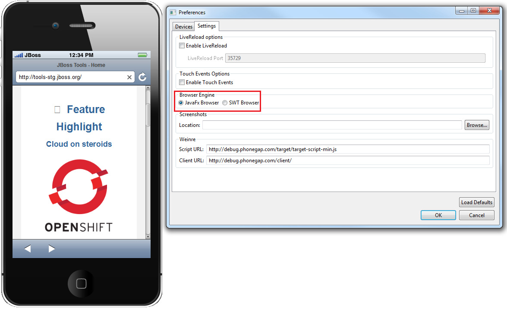
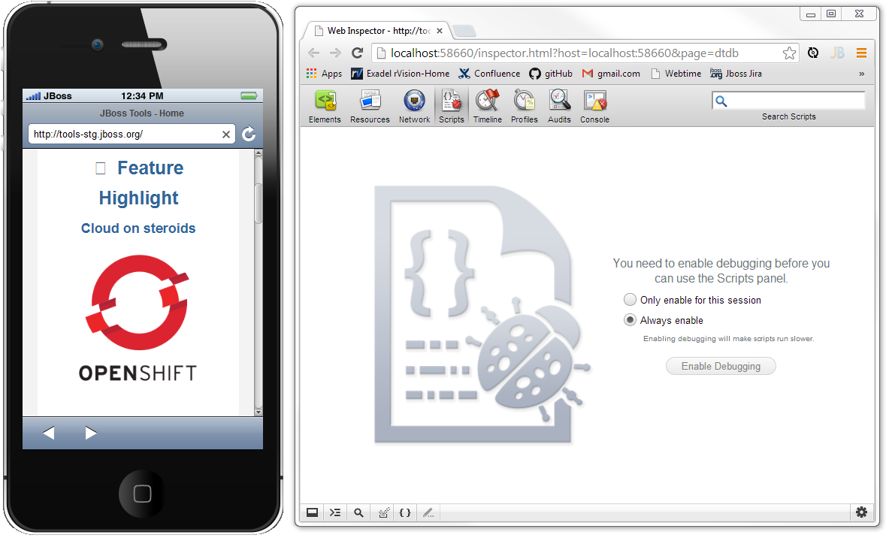
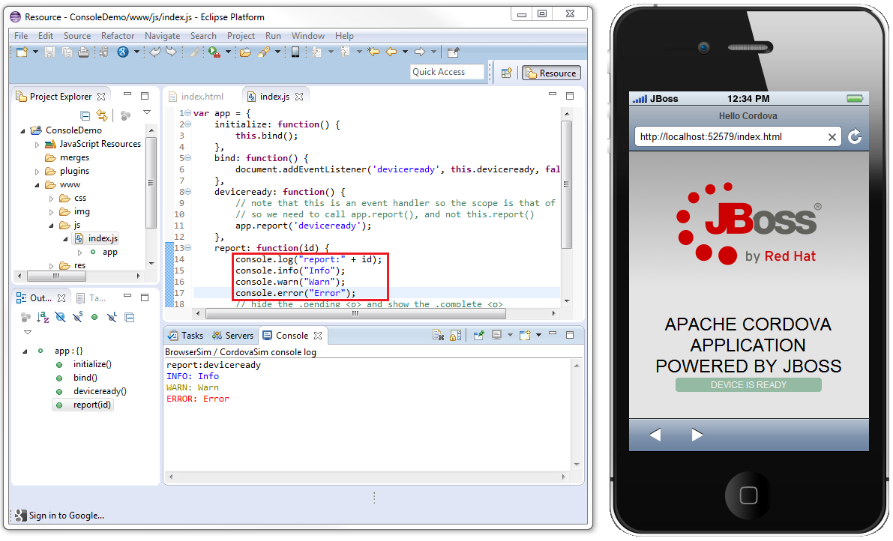

BrowserSim |
|
|
JavaFx Web Engine
|
Now BrowserSim and CordovaSim have new JavaFx web engine as an alternative to SWT WebKit. Web engine can be changed in Menu > Preferences > Browser Engine. This option is available for Windows and Mac OS users. Linux is currently not supported.  Related JIRA: JBIDE-15640 |
|
Chrome Debugger
|
Chrome Dev Tools Debugger is now available for BrowserSim / CordovaSim. This option is enabled only for JavaFx Web Engine and can be treated as a replacement of the Firebug Lite. Dev Tools Debugger can be enabled via Menu > Debug > Dev Tools...  Related JIRA: JBDS-2866 |
|
Eclipse Console Logging
|
Now the output of the main javascript console functions (  Related JIRAs: JBIDE-16485 JBIDE-16587 |